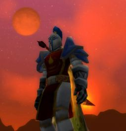
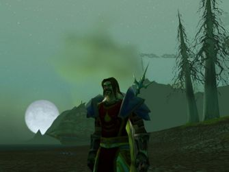
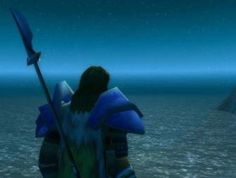

Kalder
Points : 0
Joué par :
Kalder
Joué par :
[ Information masquée ]
Age : 32
Lieu de naisance : Hautes-terres d'Arathi
Signe de naissance : Verseau
Sexe : Homme
Race : Humain
Faction : Alliance
Formation : Guerrier
Niveau : 60
Guilde :
Alfirins (les)Artisanat 1 : Forgeron
Artisanat 2 : Mineur
Informations hrp : Ancien de la version Beta, me voila rendu sur ce serveur RP...! Au grand plaisir! Car l'univers de Wow est trop grandiose pour le jouer en simple joueur terre à terre... je ne suis pas un très grand maître du RP mais j'essaie d'être bien dans mon personnage.. quand l'occasion s'y prête bien! Étant entouré de bons amis (les Alfirins), cela aide grandement! Je salue cette initiative de ce site, cela va aider le jeu de nos rôles encore plus facilement!
Description :
 Kalder est un des survivants d'une étrange brisure de l'espace-temps qui massacra toute vies (sans disctinction) d'un monde parallèle, autrefois appelé "beta"...
Dans sa chute de ce monde à celui-ci, il perdit tout: talents, force, agilité, son cheval, etc... sauf son honneur et son sens de l'humour! Des qualités innées!
Le choc le laissa presque mort, échoué et désorienté, ne reconnaissant plus personne... Des paysans (un peu Beta... héhé) le receuillir et le soignèrent. Amnésique, il recommenca sa vie à zéro, dans le Nortshire, reprenant du poil en tuant quelques loups et kobolds. De fil en aiguille, ses sens lui revinrent et le goût de reprendre du service en tant que guerrier le repris subitement. Le passé étant oublié, il se concentre maintenant sur le moment présent.
 Kalder s'est refait une vie, de nouveaux ami(e)s et continue à parcourir le monde sans ce soucier de demain. La seul différence avec sa vie passé, c'est son visage: il a vieillit terriblement! Plus personne de sa vie passée ne le reconnaitrait.
Mais peu importe, la sagesse inconsciente qui l'habite lui donne une longueur d'avance sur ce qui lui arrive au présent,... des souvenirs lui reviennent et l'aide à le diriger dans ses nouvelles quêtes... mémoires sorties du néant. De cette sagesse, il l'a partage et aime aider son prochain, peu importe sa race ou son rang... toujours dans le rire et la bonne humeur!
...Bien d'autres aventures l'attendent encore!
